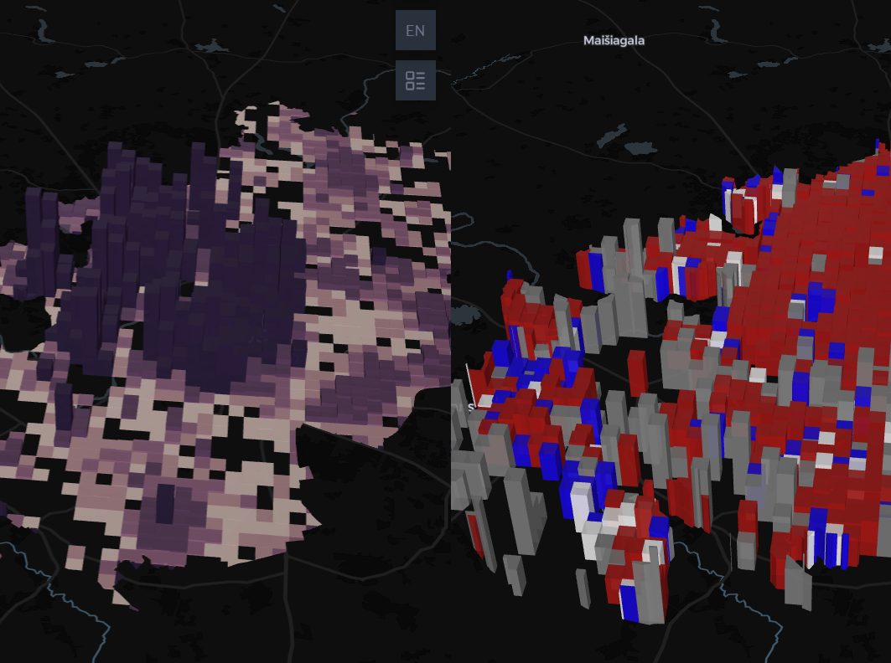
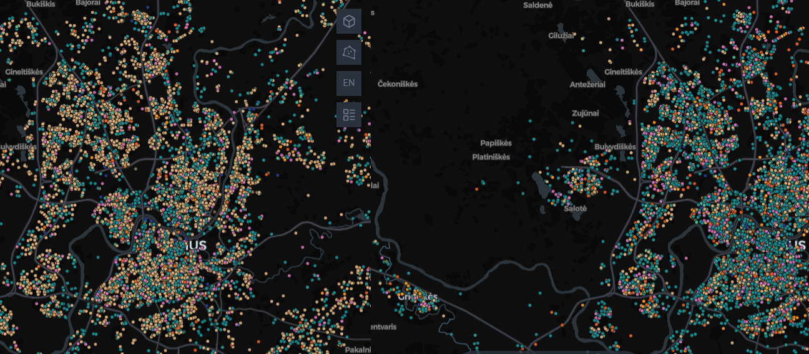
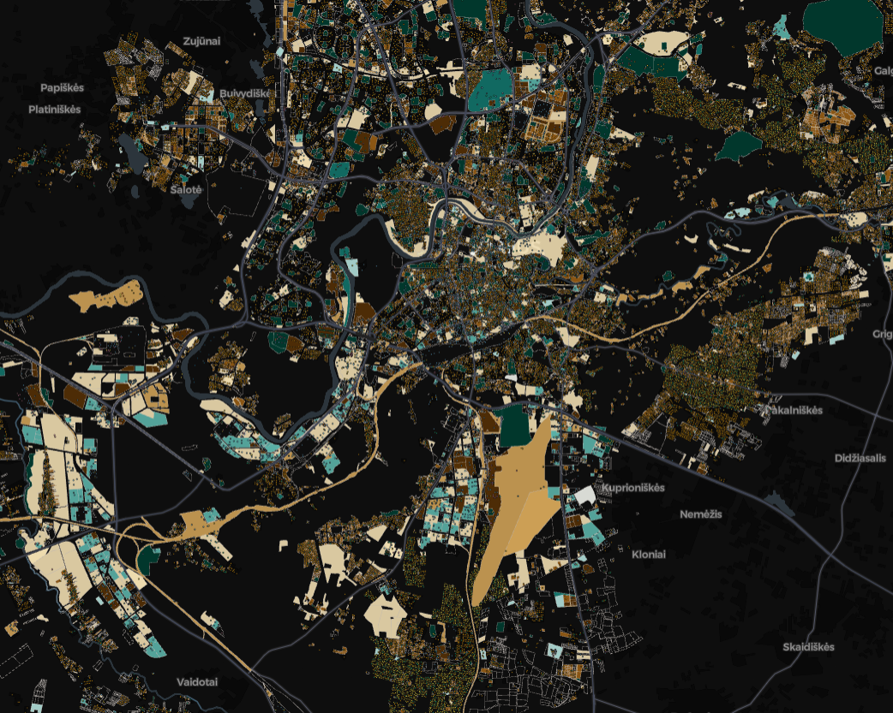
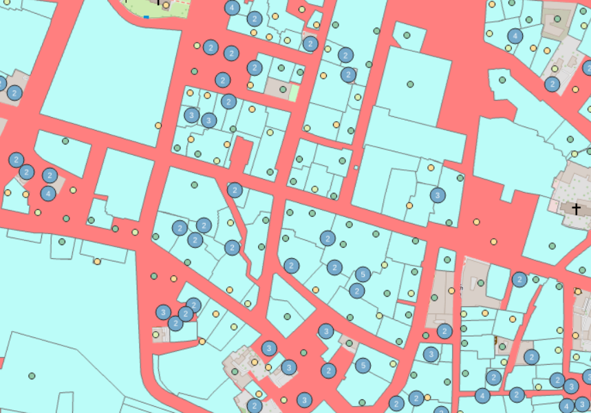
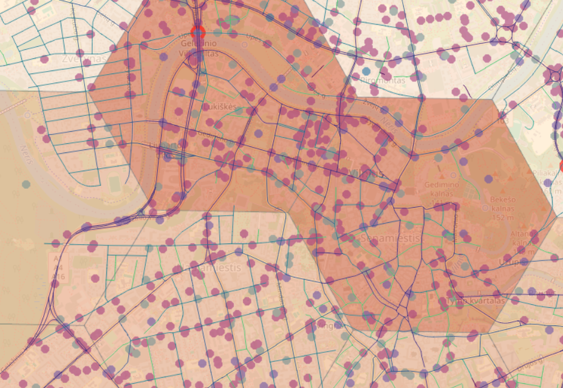

Vilniaus miesto žemėlapiai

Vilniaus gyventojų struktūra
Interaktyvus žemėlapis, atskleidžiantis Vilniaus gyventojų pasiskirstymą pagal skaičių, lytį ir amžiaus grupes.
Naršyti žemėlapį →
Įmonių pokyčiai
Interaktyvus laiko juostos žemėlapis, rodantis Vilniaus įmonių registravimo ir išregistravimo dinamiką nuo 1990 metų.
Naršyti žemėlapį →
Vilniaus sklypų paskirtys
Interaktyvus žemėlapis, kuriame vaizduojamas Vilniaus miesto sklypų zonavimas ir naudojimo paskirtys – nuo infrastruktūros teritorijų iki gyvenamųjų bei kitų funkcinio naudojimo tipų.
Naršyti žemėlapį →
Vilniaus pastatai
Interaktyvus žemėlapis, kuriame Vilniaus miesto pastatai susiejami su jų naudojimo paskirtimis ir juos apimančiais žemės sklypais.
Naršyti žemėlapį →
Gatvių, eismo įvykių ir policijos duomenys
Vilniaus miesto gatvių žemėlapis, integruojantis eismo įvykių ir policijos registro duomenis.
Naršyti žemėlapį →